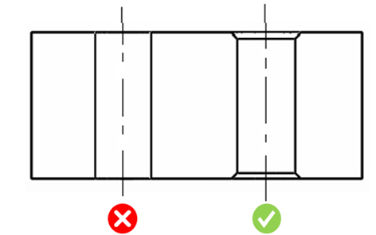

製造を容易にするため、穴の入口および出口のエッジには面取りを施す必要があります。
本ルールは、すべての種類の穴フィーチャーにおいて、入口および出口のエッジに面取りが施されていることを保証します。
部品の取り扱いおよび安全性の観点から、鋭角なエッジやバリは避けてください。
鋭角なエッジやバリを防ぐため、穴の入口および出口のエッジには面取りを施す必要があります。これらの鋭角なエッジやバリは、ファスナー、ピン、ダウエル、ロケータなどの付属部品の組み立てに悪影響を及ぼす傾向があります。

注記：
本ルールは、アセンブリレベルの解析にも対応しています。
本ルールは、DFMPro 設定に基づき、トップレベルのアセンブリパーツに対して実行できます。